1. 地震學研究範疇
地震學 (Seismology) 是地球物理學的一個重要分支，主要研究地震的發生機制、地震波的傳播規律以及地球的內部結構。其主要研究範疇包含：
- 觀測地震學：利用地震儀記錄地面震動，測定地震的發生時間、位置 (震央)、深度和規模。
- 物理地震學：研究斷層破裂機制、地殼應力累積與釋放的物理過程。
- 內部構造：透過地震波穿透地球內部的速度變化，解析地殼、地函與地核的構造與材質。
- 探勘地震學：利用人工震源探測地下結構，廣泛運用於石油、天然氣與礦產探勘。
- 工程地震學：評估地震危害度，為建築法規、耐震設計及防災減災提供科學依據。
2. 地震學基礎圖示 (圖1.1-1 ~ 圖1.1-5)
這些早期的圖表展示了地震學與地球科學發展中的關鍵基礎概念，包括板塊構造、斷層運動的基本原理或是測震儀器的發展。
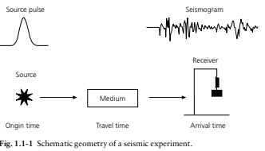
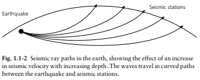
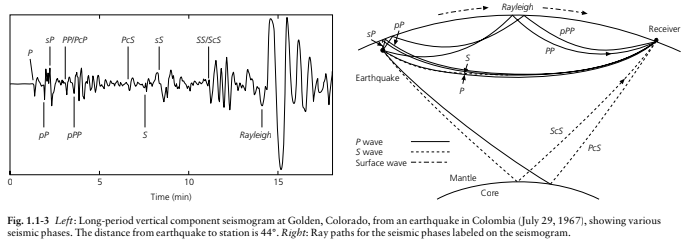
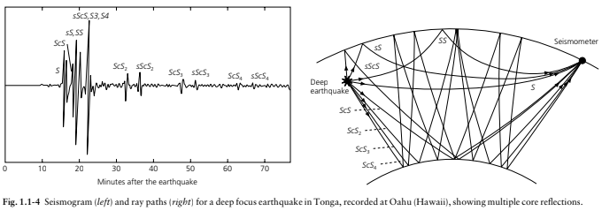
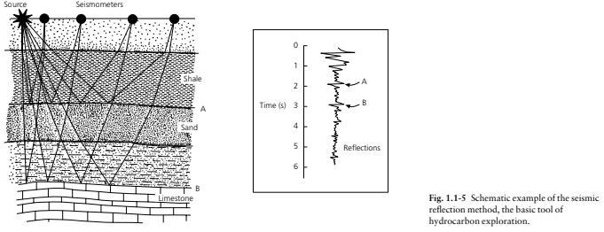
3. Seismic Hazard 與 Seismic Risk 的區別
Seismic Hazard (地震危害)
指「自然現象本身」帶來的潛在威脅。例如預期在某特定時間內，某個地點可能會發生多大強度的地震動 (Ground Shaking)、斷層錯動、海嘯或引發的山崩。危害是自然界客觀存在的，人類無法消除。
Seismic Risk (地震風險)
指「人類社會可能遭受的損失」。公式為 風險 = 危害 × 暴露度 × 脆弱度 (Risk = Hazard × Exposure × Vulnerability)。如果一個地區沒有人類居住 (暴露度為零)，或建築極其堅固 (脆弱度極低)，那麼即使地震危害再高，其風險也是低的。人類可以藉由防災手段降低風險。
4. 公式的說明：地震波能量衰減的原因
A(r) = A0 · (1/r) · e-αr
簡單代表公式 (1) 所描述的波幅隨距離衰減的數學模型。
地震波在地球內部傳遞時，其能量與振幅會隨著距離不斷變小，主要原因有兩個：
- 幾何擴散 (Geometrical Spreading)：
地震波從震源向外以球平面的形式輻射擴展。隨著距離 r 增加，波前的表面積越來越大 (球面正比於 r² )，所以單位面積上的能量會下降，導致振幅成反比 (1/r) 減少。這是最主要的衰減因素。 - 內在衰減 (Intrinsic Attenuation) 與散射 (Scattering)：
又稱為非彈性衰減。地球不是完美的彈性體，地震波在岩石中傳播時，會遇到摩擦力，將一部分機械能轉化為熱能消散。此外，岩層中存在裂隙和不均勻構造，會使波發生反射、折射、散射而使主要能量偏離原傳播路徑。在公式中以指數項 e-αr 表示，α 為衰減係數。
5. 社會影響圖示 (圖1.2-3、圖1.2-5、圖1.2-6)
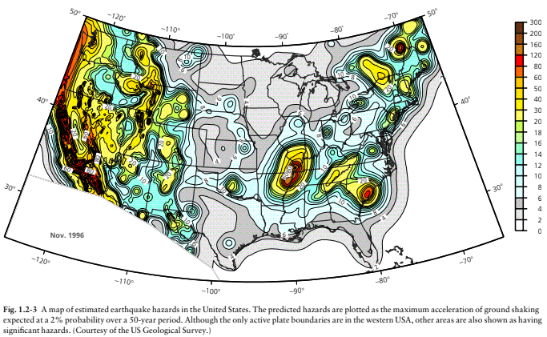
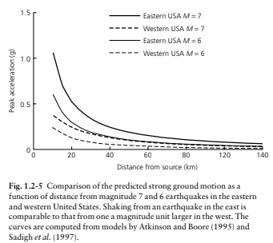
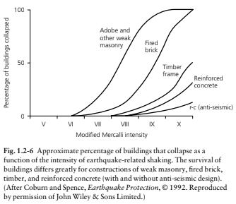
6. 不同建材的抗震能力與建築高度的影響
不同建材對地震的抵抗能力
鋼筋混凝土 (RC)：台灣最常見，具備剛性與一定的韌性。適當設計下，能抵抗中等地震，但在極端地震中若剪力牆不足易發生脆性破壞。
鋼骨 (SS)：韌性極佳，能發生較大變形而不會立即崩塌，抗拉與抗壓能力強，多用於高層建築，但造價較高且側向位移較大。
磚造/無筋砌體：抗壓但不抗拉，受地震側向剪力時極易破裂倒塌，耐震能力最差。
木造：質量輕盈且具備良好柔韌性，在地震下透過接頭吸收能量不易傾倒，是非常優良的耐震建材。
地震波對不同高度建築物的影響
每棟建築物都有其自然結構週期 (Natural Period)，大致上樓層越高，其自然週期越長。
共振效應 (Resonance)：當地震波的主要頻率與建築物的自然週期相近時，會發生共振，導致建築物劇烈搖晃並受到最大破壞。
較硬的地盤容易放大高頻 (短週期) 地震波，此時矮房子容易受損；而軟弱地盤 (如台北盆地泥層) 容易放大低頻 (長週期) 地震波，這時高樓大廈反而搖晃得最為劇烈。
7. 土壤液化 (Soil Liquefaction) 的原因
土壤液化是地震引發的一種嚴重次生災害，主要發生在充滿地下水、且土壤組成以鬆散飽和砂土為主的區域。其發生機制如下：
- 強烈震動：地震帶來的快速反覆剪力作用使得鬆散的砂土顆粒傾向排列得更緊密。
- 水壓劇增：由於震動過快，孔隙中的地下水來不及排出，導致「孔隙水壓」瞬間急遽上升。
- 喪失承載力：當水壓大於或等於土壤顆粒間的有效應力時，砂土顆粒會被水頂開，呈現如同液體泥漿般的狀態，完全喪失承載建築物的能力。
- 結果現象：會造成地表噴砂、噴水，上方建築物發生不均勻沉陷、傾斜，甚至地下管線或箱涵浮出地面。
8. 地震預報 vs 地震預測
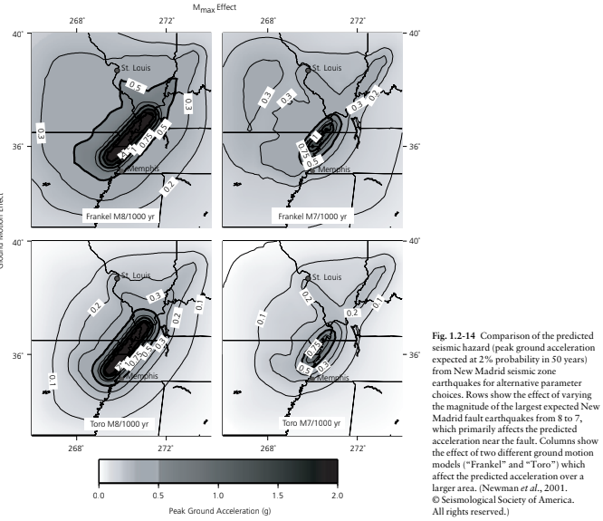
地震預測 (Prediction)：指在地震發生前，明確指出地震發生的準確時間、具體地點 以及 確切規模。以目前的科學技術，短期精準的地震預測仍無法實現。
地震預報 (Forecasting)：偏向於「長期機率」的概念。透過分析斷層過去的活動歷史、滑移速率，推估該斷層在未來幾十年內，發生一定規模以上地震的「機率」。
9. Seismic Gap (地震空窗期)
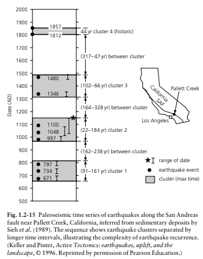
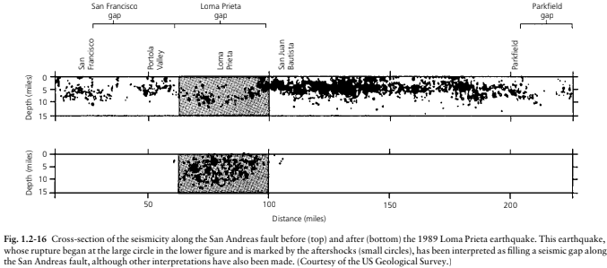
地震空窗期 (Seismic Gap) 是指位於已知活躍板塊邊界或活動斷層上的一段區域。在該段區域兩側的斷層近期都曾發生過大地震，釋放了應力，唯獨該段區域「在異常長的時間內」沒有發生過大地震。
由於板塊持續以穩定速度推進，未發生地震破裂的空窗期累積了大量的應變能 (Slip Deficit)。因此，地震空窗期被視為未來極可能發生大地震的高風險區域。
10. 地震預測的方法
儘管尚未有完美的方法，科學家仍持續尋找地震發生前的前兆 (Precursors) 進行研究：
- 前震觀測：大地震前有時會出現小規模的群震。
- 地下水變化：觀測井水位異常升降或水質變濁。
- 地球化學異常：斷層微小破裂導致地底的氡氣 (Radon) 釋放量突然增加。
- 地殼變形：利用GPS衛星測量地面在震前的微小隆起或位移。
- 電磁異常：岩床在受極大壓力時，釋放電荷改變周圍地磁場。
- 動物異常行為：民間常提到動物有避險行徑，但科學上較難量化標準化。
11. 如何用地震學方法監測核子試爆
全面禁止核試驗條約 (CTBT) 的執行，很大程度上依賴全球地震觀測網。核子試爆和天然地震在地震波形上有顯著的差異：
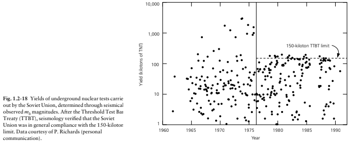
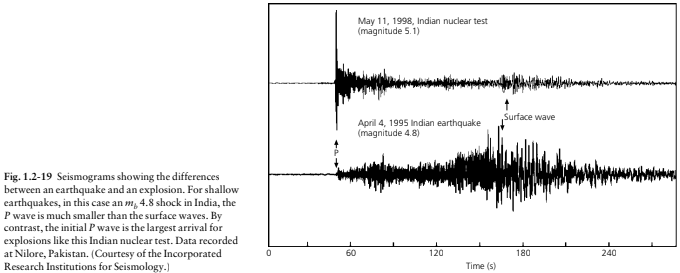
- 震源深度：核爆通常在極淺層或地表進行；而許多天然地震發生在地下數十至數百公里深。
- P波初動方向：核爆是爆炸源 (向外膨脹)，因此地震儀記錄到的P波初動方向全都是向上的「壓縮波」。天然斷層滑動 (錯動源) 會因為象限不同，產生有壓縮也有膨脹的初動。
- 波形的頻率與比例：核爆過程幾乎瞬間釋放大量能量，因此會產生非常大的體波 (P波)，而較少產生表面波 (mb規模大於Ms規模)；天然地震的破裂持續時間長，產生非常發達且強烈的表面波，以及明顯的S波。
- 缺乏餘震系列：核爆通常是單一事件，後續極少像天然主震伴隨著頻繁且規模遞減的餘震。